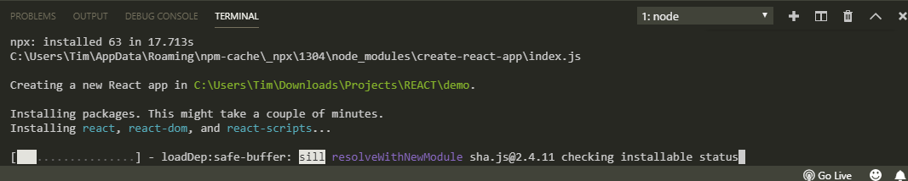
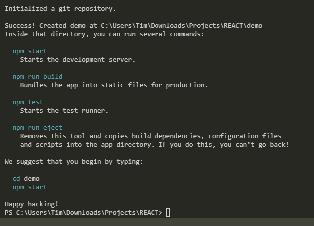
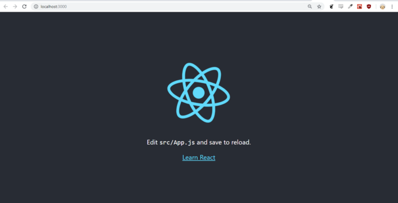
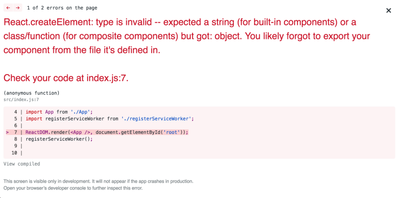

Создаем приложение React
Create React App - это инструмент (созданный разработчиками из Facebook), который даст вам огромное преимущество при создании приложений React. Он обрабатывает все настройки, поэтому вам не нужно знать ни Babel, ни Webpack. Вы просто запускаете первоначальную установку, и вы сразу же окажетесь в локальной среде разработки!
Установка с помощью Create React App
Все, что нам нужно сделать, это открыть наш терминал и запустить следующую команду:
npx create-react-app
Мы используем npx для загрузки и запуска команд Node.js без их установки. Если у вас не установлен Node, вы можете скачать его здесь .
Запустите указанную выше команду, чтобы начать установку! Дайте ему любое имя, которое вам нравится..

Установка может занять несколько минут. Прямо сейчас он устанавливает все зависимости, необходимые для построения вашего проекта. И это также генерирует вашу первоначальную структуру проекта.

Успех! Теперь вы можете открыть папку вашего проекта и проверить созданную файловую структуру.
Несколько команд были добавлены в файл package.json:
- npm start запускает сервер разработки, включая автоматическую перезагрузку страницы при внесении изменений
- run build связывает приложение в статические файлы для производства в папку build
- npm test запускает тестов с помощью Jest
- run eject выводит настройки вашего приложения из create-react-app, которые позволяет вам настроить конфигурацию вашего проекта
Запуск вашего приложения
Теперь давайте запустим наш локальный сервер! Из папки вашего приложения запустите:
npm start
Ваше приложение запустится в браузере на localhost:3000

Каждый раз, когда вы начинаете новый проект с помощью create-react-app, вы будете иметь последнюю версию React, React-DOM и React-Scripts. Теперь давайте кратко рассмотрим некоторые функции create-react-app.
Возможности Create-React-App
Как вы увидите в сгенерированном package.json, есть ряд команд, которые доступны для использования в ваших приложениях - давайте поговорим о них немного подробнее.
Прод сборка
Когда приходит время перейти от разработки к публикации в сети, вы можете сделать это, запустив npm run build. Будет сгенерирована папка build, содержащая все статические файлы, которые будут использоваться на сервере.
Сама команда build преобразует ваш код React в код, который понимает браузер (используя Babel). Он также оптимизирует ваши файлы для лучшей производительности, объединяя все ваши файлы JavaScript в один файл, который будет минимизирован для сокращения времени загрузки.
Тестирование вашего приложения
В комплекте с create-react-app поставляется JEST, который позволяет проверить ваш код с помощью команды npm test. Он будет запускаться аналогично npm start, он будет перезапускать ваши тесты каждый раз, когда вы вносите изменения.
Для тех, кто заинтересован в тестировании компонентов с помощью Jest, все, что вам нужно, это либо добавить суффиксы к нужным файлам, .spec.js либо .test.js, либо переместить файлы с тестами в папку __tests__. Jest запустит ваши тесты для указанных вами файлов.
Ejecting
Всякий раз, когда вы создаете приложение с помощью create-react-app, ваши параметры сборки не могут быть изменены, так как они были предварительно настроены в react-scripts. Тем не менее, запустив npm run eject, вы можете получить полный контроль над конфигурацией вашего приложения.
Конфиг будет скопирован в каталог вашего приложения в папку config, а скрипты - в папку scripts. Затем вы можете отредактировать настройки Webpack, Babel и ESLint в соответствии с вашими пожеланиями.
Сообщения об ошибках
Еще одна полезная функция, включенная в приложение create-react-app, - это встроенные сообщения об ошибках, которые генерируются в окне консоли и браузера.
Опечатки и синтаксические ошибки приведут к ошибке компиляции. И если у вас есть куча ошибок, вы получите оверлей, разбивающий каждую, например так:

Заключение
Мы рассмотрели, как настроить локальную среду разработки с помощью create-react-app. Вам не нужно тратить время на установку зависимостей или настройку процесса сборки - вы можете сразу перейти к написанию кода!